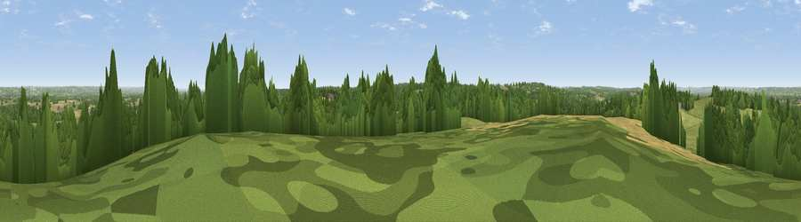

Viewpoint near Cranbrook
#30329 in England · top 34% of its area beats it · near CranbrookThe view, rendered

A 360° render of this exact spot computed from the terrain model, tree cover and land cover — summer colours, afternoon light, calibrated against photographs of famous viewpoints. Real trees, hedges and buildings will differ in detail.
The panorama
Grey silhouette: terrain skyline in each direction (720 bearings, Earth curvature and refraction included). Dashed green: skyline with trees (+15 m) and buildings (+8 m) as obstacles. Blue strip: how far the ground is visible on each bearing.
Where the view opens
Wedge length = distance to the farthest visible ground on that bearing (vegetation-aware). Rings at 10, 25 and 50 km.
What fills the view
42% grassland · 41% woodland · 16% cropland · 1% built-up
Angular shares of the visible panorama (visual magnitude), not map area. Landscape diversity 0.47 (0–1 Shannon).
Key numbers
More beautiful places nearby
The staircase of upgrades: each row has a higher view potential than everything closer. Driving times are estimates from straight-line distance, calibrated against real road routing — check an actual route before setting out.
| Place | Direction | Drive | Score |
|---|---|---|---|
| Viewpoint near Sissinghurst | ESE · 1 km | ~3 min | 48.1 |
| Viewpoint near Goudhurst | NW · 1 km | ~3 min | 48.3 |
| Viewpoint near Goudhurst | WNW · 2 km | ~5 min | 50.6 |
| Blackbush Wood Hill | SSW · 4 km | ~10 min | 53.5 |
| Viewpoint near Brenchley | WNW · 8 km | ~17 min | 55.0 |
| Birchetts Hill | NW · 15 km | ~27 min | 56.3 |
| Viewpoint near Hollingbourne | NNE · 18 km | ~31 min | 59.1 |
| Viewpoint near Hollingbourne | NNE · 19 km | ~32 min | 62.4 |
51.12975, 0.51431 · source: screening · position refined by local search. Computed location — check access rights before visiting.